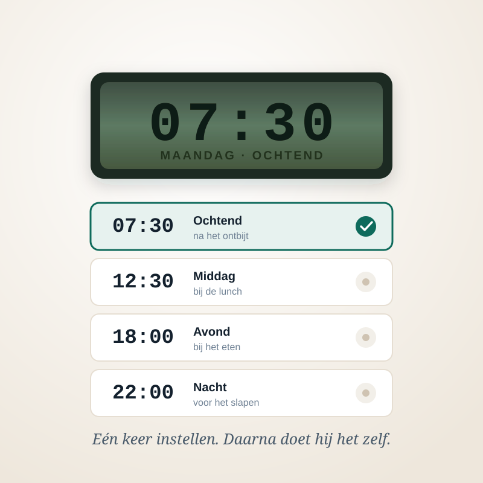

Handleiding
Deze uitleg zit ook op papier in de doos. Komt u er niet uit? Pak het apparaat erbij en bel 085 – 0000 000 – wij lopen het met u door.
Voordat u begint: vraag bij uw apotheek na of uw medicijnen uit de originele verpakking mogen. De meeste wel, maar sommige zijn gevoelig voor licht of vocht. Uw apotheek weet dat per medicijn.
1. De vakjes vullen
- Haal het deksel eraf. Zit er een slot op, draai het sleuteltje dan eerst een kwartslag naar links.
- Leg het apparaat voor u neer met vakje 1 naar u toe.
- Vul de vakjes op volgorde. Bij de Bijtijds 28 is elk vakje één moment; gebruikt u vier momenten per dag, dan zijn de eerste vier vakjes samen dag één.
- Deksel erop en, als u dat wilt, op slot.
Tip: vul altijd op dezelfde dag van de week. Zondagochtend na de koffie werkt voor veel mensen goed, omdat u het dan niet vergeet.
2. De tijd goed zetten
- Houd de knop SET drie seconden ingedrukt tot de uren gaan knipperen.
- Zet met de pijltjesknoppen het juiste uur en druk op SET.
- Doe hetzelfde voor de minuten.
- Nog een keer op SET: de tijd staat goed.
3. De inneemmomenten instellen
- Druk op ALARM. Op het display verschijnt AL 1: het eerste moment van de dag.
- Zet met de pijltjes de tijd, bijvoorbeeld 08:00, en druk op SET.
- Druk opnieuw op ALARM voor AL 2 en herhaal het voor elk moment dat u gebruikt.
- Gebruikt u er maar drie? Zet dan bij AL 4 de tijd op --:-- met het pijltje omlaag. Dat moment wordt dan overgeslagen.

4. Het alarm uitzetten
Als het alarm gaat, klinkt er een signaal en knippert het lampje. Dat blijft doorgaan tot u het vakje leeghaalt – dat is met opzet zo, anders zou u het kunnen missen.
Wilt u het geluid eerder stil, druk dan op de grote groene knop. Het lampje blijft dan nog knipperen als herinnering, tot het vakje leeg is.
5. Batterijen wisselen
- Verschijnt er een batterijsymbooltje op het display, dan heeft u nog ongeveer twee weken.
- Draai het apparaat om en schuif het klepje van het batterijvak open.
- Wissel de batterijen één voor één. Doet u dat binnen een minuut, dan blijven uw ingestelde tijden staan.
- Controleer daarna even of de tijd nog klopt.
Als er iets niet werkt
Het alarm gaat niet af
Controleer of het volume niet op nul staat (knop VOL) en of de tijd op het display klopt. Loopt de klok een paar uur achter, dan gaat het alarm op het verkeerde moment af.
De ring draait niet door
Meestal zit er een pil klem tussen twee vakjes. Haal het deksel eraf en duw de ring voorzichtig met de hand een stukje verder. Blijft het gebeuren, bel ons dan – dan sturen wij een nieuwe onder de garantie.
Het display is leeg
Vrijwel altijd lege batterijen. Zijn die vers en blijft het display leeg, dan is het apparaat defect; bel ons en wij sturen kosteloos een nieuwe.
Ik ben het sleuteltje kwijt
Er zaten er twee in de doos; kijk nog even in de verpakking. Zijn ze allebei weg, bel ons dan. Wij sturen een nieuw setje voor een paar euro na.
Nog steeds vragen?
Bel 085 – 0000 000, maandag tot en met vrijdag, 9.00 tot 17.00 uur. Houd het apparaat bij de hand, dan lopen wij het samen door. Dat duurt meestal geen vijf minuten.